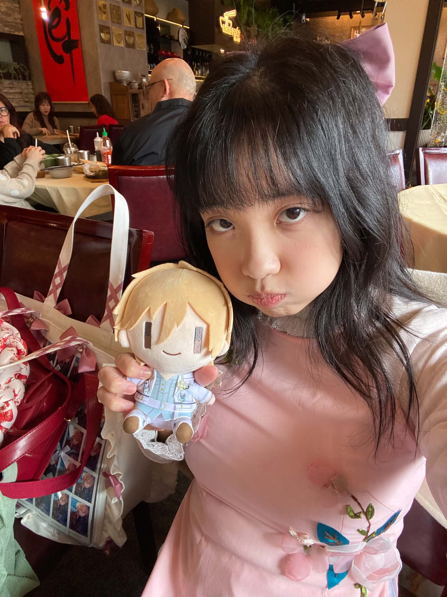
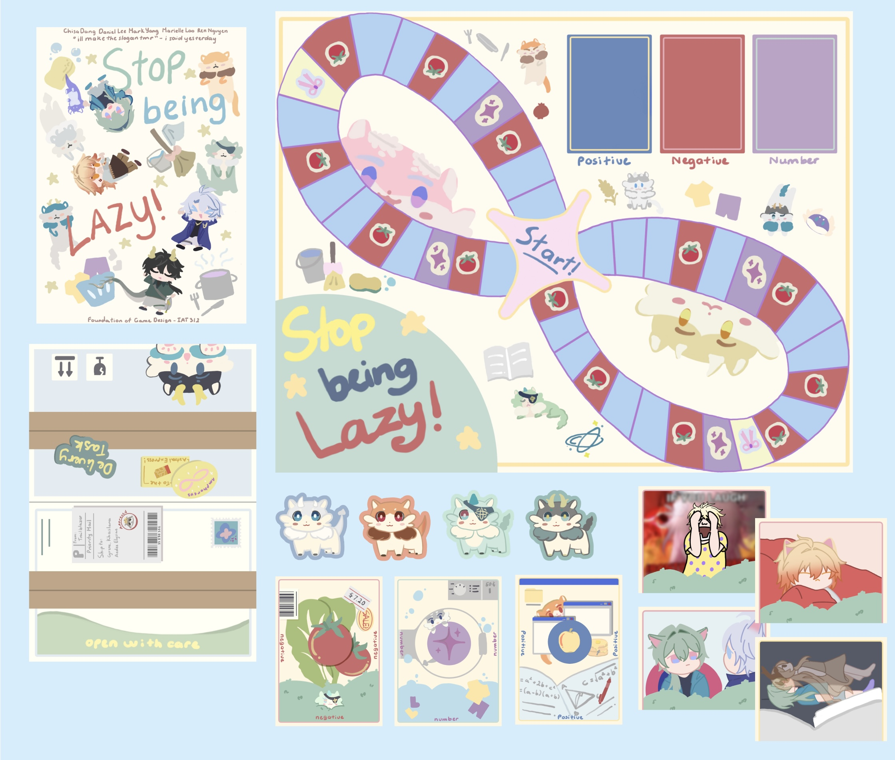
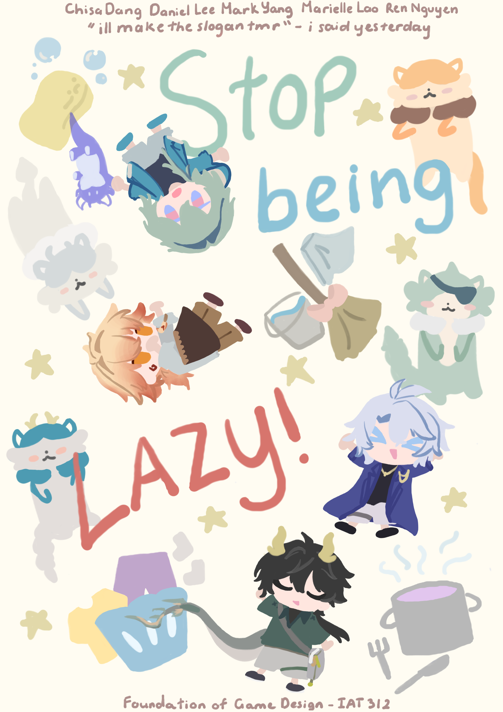
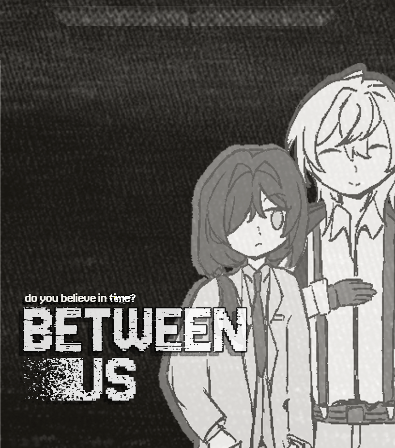
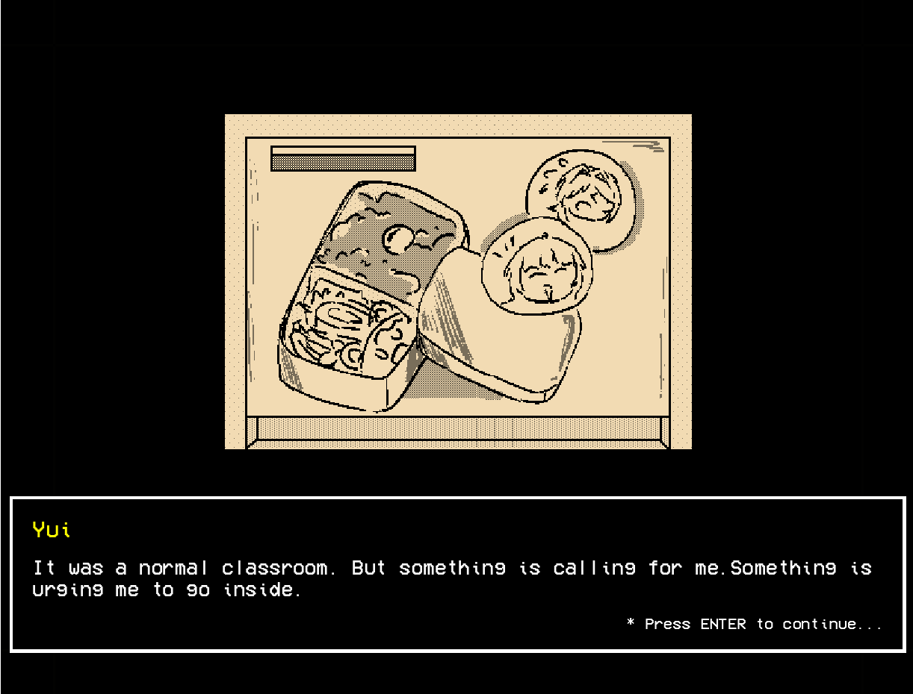

Portfolio — Interactive Arts & Technology · SFU
Chisa's
Portfolio
Game Designer
Illustrator
UI / UX Designer
Web Developer
Portfolio — Interactive Arts & Technology · SFU
Game Designer
Illustrator
UI / UX Designer
Web Developer
I'm Chisa Dang, an Interactive Arts & Technology student at Simon Fraser University having a passion for game design, illustration, and user experience. I care about the why behind every design decision, from a meaningful game mechanic to a considered pixel. My practice moves between narrative scripts, concept art, and interactive systems, tied together by a rigorous process and a genuine love for the weird, playful edges of interactive media.
Currently Seeking
A style guide defining the visual language of this portfolio on how colour, type, and layout express my aesthetics in design.
Display — Kepler Std (Adobe) · Fallback: Playfair Display
Aa Bb Cc
Display Italic — warmth & narrative voice
Thoughtful Play
Mono / Labels — Receipt (Adobe) · Fallback: Space Mono
IAT · SFU · GAME DESIGN · ILLUSTRATION
Body — Thermal Variable (Adobe) · Fallback: Inter
Process, iteration, and genuine curiosity drive every project.
THOUGHTFUL PLAY
Considerate in every artworks and adding colorful and vibrant style into the final products
SHOW THE WORK
Cherish every step-by-step works and design process are important to understand how problems got solved
CONCEPT SPECIALTY
Confindent in planning ideas and intergate them into different projects and create new experience for audiences
“I love making art with meaningful and bringt to all my audience to enjoy through interactive experiences.”

Board Game Overview
Poster Final Board
Final Board
Project 01 — Process Analysis
Board Game
Process AnalysisStop Being Lazy! began with a question: what does it feel like mechanically to live with ADHD, and can a board game reflect that without reducing it to a punchline? Approaching the brief through the inside-out design framework meant anchoring every rule to an emotional truth before building the system around it.
The earliest phase was research and honest conversation about executive dysfunction, the gap between intent and action. Initial concept sketches explored a momentum-based movement system where energy was a finite, shifting resource, renewed not by rest but by stimulation that fits the moment. At this stage the design was sprawling and ambitious; the goal was to generate options, not to commit to them.
Structured playtesting showed quickly where the design over-explained itself. Mechanics that felt clever in isolation confused players mid-game. Each iteration stripped a layer of complexity while preserving the emotional core: by the third major revision, "distraction elements" had become a resource as much as an obstacle, something players could leverage rather than just endure.
Visually, the art direction embraced pop culture pastiche: smooth linework, bright colour, and a visual density that mirrors the sensory experience the game describes. Final card and board illustrations were produced in Clip Studio Paint immediate appeal with iconographic clarity so rules remained legible even mid-play.
Project 02 — Process Analysis
2D Video Game
Process AnalysisBetween Us was an exercise in disciplined restraint. The brief asked for a 2D interactive role-playing game built narrative-first, which meant every system, movement, dialogue,camera had to serve the story rather than compete with it. The MDA (Mechanics, Dynamics, Aesthetics) framework was adopted early as both a design lens and a critique tool: each feature proposal had to justify what aesthetic experience it ultimately created.
The script came first. Before a single sprite was drawn, I drafted character arcs and dialogue trees mapping the emotional journey players would take. Writing for an interactive medium meant leaving deliberate gaps in the narrative, moments where direction depends on player choice rather than cutscene. Balancing author control with player agency became the central design problem of the whole project.
Character development and environment concepting ran in parallel. Sprite sheets were built for expressiveness at small scale: each character needed a distinctive silhouette and a palette that communicated personality at a glance. Multiple iterations refined during the product progress between charcters and the environments.
The final build held a coherence between its text and image that players noticed. Testers consistently remarked on emotional engagement with the characters which was always the goal, not technical polish for its own sake, but design rigour in service of feeling.

Main Game Promotion Visual
CG In-Game Art Character Sprites Design
Character Sprites Design
Project 03 — Additional Work

Multimedia Programming, SFU · May–Aug 2025
2D Interactive Game
A 2D interactive game built in Java with Eclipse IDE, where I produce as a solo project and balancing in both the engineering and visual direction producing environments, characters, and UI elements that hold a cohesive, appetizing aesthetic across all screens. The project required resolving technical constraints through visual problem-solving, working across code and craft simultaneously.